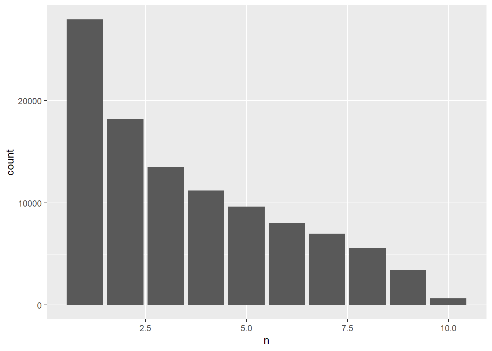
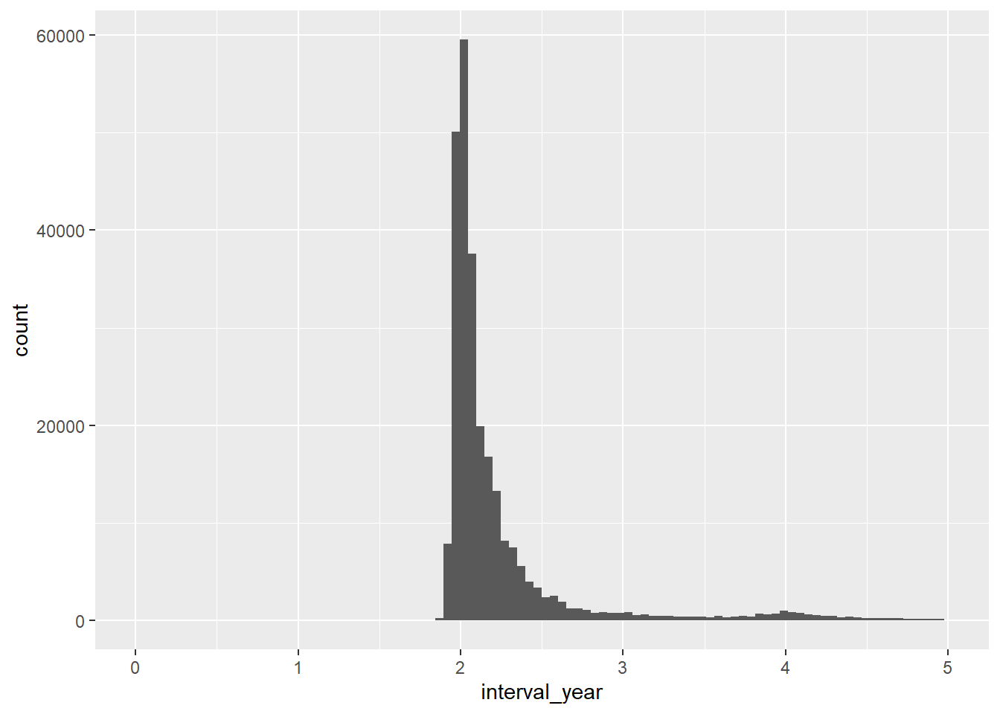

library(tidyverse)
library(lubridate) # datesSwiss data
Read in data
path <- "/Users/mdr30/Library/CloudStorage/Box-Box/Swiss_MMG/Swiss_data_11_07_19/Swiss (Vaud) data for overdiagnosis project" # Marc
path <- "C:/Users/18582/Box/Overdiagnosis_Estimation/Swiss_data/Swiss (Vaud) data for overdiagnosis project/" # Raphael
dat.comp <- read_delim(
file = paste0(path, "compliance.csv"),
delim = ";"
)Rows: 541096 Columns: 4
-- Column specification --------------------------------------------------------
Delimiter: ";"
chr (2): dconv, examdt
dbl (2): nodoss, nopartreas
i Use `spec()` to retrieve the full column specification for this data.
i Specify the column types or set `show_col_types = FALSE` to quiet this message.dat.exam <- read_delim(
file = paste0(path, "mammogram.csv"),
delim = ";"
)Rows: 541096 Columns: 8
-- Column specification --------------------------------------------------------
Delimiter: ";"
chr (2): examdt, bio1stdt
dbl (5): nodoss, lects, concl, bio, biores
lgl (1): tech
i Use `spec()` to retrieve the full column specification for this data.
i Specify the column types or set `show_col_types = FALSE` to quiet this message.dat.woman <- read_delim(
file = paste0(path, "woman.csv"),
delim = ";"
)Rows: 106954 Columns: 15
-- Column specification --------------------------------------------------------
Delimiter: ";"
chr (3): birthdate, endpointdt, stage
dbl (12): nodoss, endpoint, detec, surgery, radiation, histology, behaviour,...
i Use `spec()` to retrieve the full column specification for this data.
i Specify the column types or set `show_col_types = FALSE` to quiet this message.Compliance data
# number of realized screens
dat.comp %>% count(nopartreas) # 376K realized screens (9)# A tibble: 4 x 2
nopartreas n
<dbl> <int>
1 1 2369
2 2 1267
3 3 160766
4 9 376694# distribution of number of realized screens per woman
dat.comp %>%
filter(nopartreas == 9) %>% # realized screens only
count(nodoss) %>%
ggplot(aes(x=n)) + geom_bar()
# number of missing dates among realized screens
dat.comp %>%
mutate(exam_date_missing = examdt == "99999999") %>%
count(nopartreas, exam_date_missing)# A tibble: 6 x 3
nopartreas exam_date_missing n
<dbl> <lgl> <int>
1 1 FALSE 276
2 1 TRUE 2093
3 2 FALSE 1065
4 2 TRUE 202
5 3 TRUE 160766
6 9 FALSE 376694# distribution of wait time between screens
d_interval <- dat.comp %>%
filter(examdt != "99999999") %>%
mutate(
exam_date = dmy(examdt),
exam_date_int = as.integer(exam_date)) %>%
group_by(nodoss) %>%
arrange(nodoss , exam_date) %>%
mutate(
interval_day = c(diff(exam_date_int), 0),
interval_year = interval_day / 365
) %>%
filter(interval_year > 0)
d_interval %>%
ggplot(aes(interval_year)) +
geom_histogram(bins = 100) +
xlim(0, 5)Warning: Removed 6855 rows containing non-finite values (stat_bin).Warning: Removed 2 rows containing missing values (geom_bar).
summary(d_interval$interval_year) Min. 1st Qu. Median Mean 3rd Qu. Max.
0.05753 2.00548 2.07123 2.36028 2.24384 18.35343 Remarks:
There are 376K realized screens.
No realized screens has a missing exam date (very good!).
Most women had multiple (up to 10) screens.
The typical interval between consecutive screens is 2 years, with a small tail to the right [IQR = (2, 2.24)].
Woman data
dat.woman %>% count(endpoint)# A tibble: 5 x 2
endpoint n
<dbl> <int>
1 1 2244
2 2 3459
3 3 1666
4 4 7897
5 5 91688# top three days for each endpoint category
dat.woman %>%
group_by(endpoint) %>%
count(endpointdt, sort = TRUE) %>%
slice(1:3)# A tibble: 15 x 3
# Groups: endpoint [5]
endpoint endpointdt n
<dbl> <chr> <int>
1 1 99999999 350
2 1 20.12.2013 5
3 1 01.04.2010 4
4 2 21.02.2017 156
5 2 16.07.2018 62
6 2 24.11.2008 60
7 3 22.11.2017 45
8 3 24.10.2017 33
9 3 09.02.2018 30
10 4 17.10.2012 141
11 4 19.11.2012 121
12 4 15.08.2012 82
13 5 14.05.2018 1621
14 5 12.10.2017 1514
15 5 20.12.2018 1480# mode of detection and endpoint
dat.woman %>% count(endpoint, detec)# A tibble: 27 x 3
endpoint detec n
<dbl> <dbl> <int>
1 1 0 70
2 1 1 1596
3 1 2 49
4 1 3 98
5 1 4 2
6 1 5 429
7 2 0 65
8 2 1 15
9 2 2 3
10 2 3 56
# ... with 17 more rowsRemarks:
2,244 cancers
350 cancers with a missing date
1,596 cancers screen-detected in program
70 cancers symptomatic/clinical (again, a small number to learn the sojourn time distribution)
429 cancers with unknown detection mode
(too) many women censored (endpointdt = 5) on the same days.
mode of detection seems incoherent with endpoint, e.g. screen-detected (detec=1,2) with deaths (endpoint=2)
Exam data
d_join <- left_join(
dat.comp %>% mutate(row_id = 1:nrow(.)),
dat.exam %>% mutate(row_id = 1:nrow(.)),
by = c("row_id", "nodoss", "examdt") # have to join by row_id because multiple rows with examdt=9999999 and same nodoss
) %>%
left_join(dat.woman, by = "nodoss") # coherence across data sets
all(dat.comp$nodoss == dat.exam$nodoss)[1] TRUEall(dat.comp$examdt == dat.exam$examdt)[1] TRUEd_join %>%
count(nopartreas, concl)# A tibble: 17 x 3
nopartreas concl n
<dbl> <dbl> <int>
1 1 1 233
2 1 2 6
3 1 3 31
4 1 4 1
5 1 5 4
6 1 9 2094
7 2 1 1017
8 2 3 40
9 2 5 8
10 2 9 202
11 3 9 160766
12 9 1 321270
13 9 2 36184
14 9 3 16625
15 9 4 666
16 9 5 1519
17 9 9 430d_join %>%
#filter(nopartreas == 9) %>%
filter(concl != 9) %>%
mutate(concl_binary = concl > 3) %>%
count(concl_binary)# A tibble: 2 x 2
concl_binary n
<lgl> <int>
1 FALSE 375406
2 TRUE 2198Remarks:
Variables
nodossandexamdtare the same in the two datasets.concl(BI-RADS) seems incoherent withnopartreas(Reason not attending), e.g. BI-RADS=5 for women that did not attend for medical reason.430 unknown BI-RADS among realized screens
+- 2,200 positive screens (BI-RADS>3)
Clean data
d_join %>%
select(
row_id, nodoss, birthdate,
examdt, nopartreas,
concl,
endpoint,
endpointdt
) %>%
mutate_at(vars(examdt, birthdate, endpointdt), na_if, "99999999") %>%
mutate_at(vars(examdt, birthdate, endpointdt), dmy)# A tibble: 541,096 x 8
row_id nodoss birthdate examdt nopartreas concl endpoint endpointdt
<int> <dbl> <date> <date> <dbl> <dbl> <dbl> <date>
1 1 1003341631 1961-12-17 NA 3 9 5 2018-10-10
2 2 1003341631 1961-12-17 NA 3 9 5 2018-10-10
3 3 1003341631 1961-12-17 2014-12-01 9 1 5 2018-10-10
4 4 1003341722 1961-11-08 2016-11-28 9 1 5 2018-10-05
5 5 1003341722 1961-11-08 NA 3 9 5 2018-10-05
6 6 1003341722 1961-11-08 2014-11-18 9 2 5 2018-10-05
7 7 1003341813 1964-12-19 2014-12-05 9 1 5 2018-10-05
8 8 1003341813 1964-12-19 2016-11-25 9 1 5 2018-10-05
9 9 1003341813 1964-12-19 2019-01-21 9 1 5 2018-10-05
10 10 1003341904 1964-10-04 2014-12-10 9 1 5 2018-11-09
# ... with 541,086 more rows